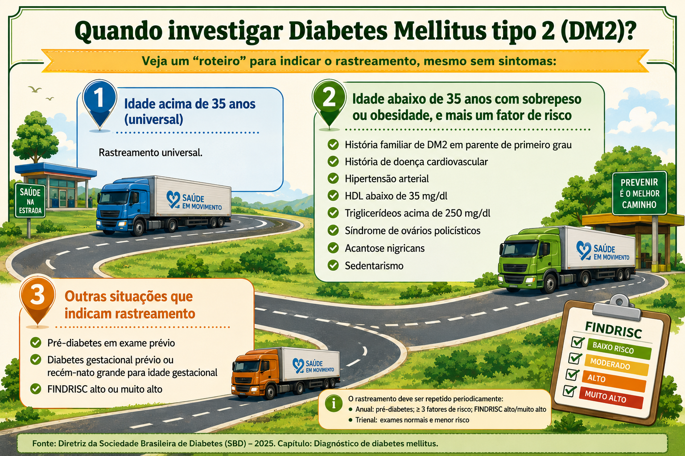
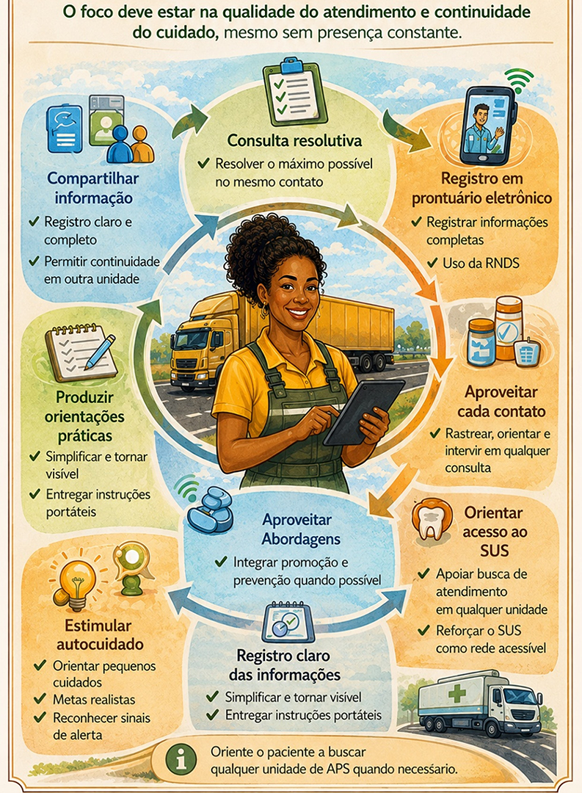

Apresentação do Módulo
Seja bem-vindo ao Módulo IV! Considerando todo o contexto e as especificidades já estudadas até aqui, daremos continuidade às reflexões e adicionaremos uma nova camada.
Neste módulo, vamos compreender as Doenças Crônicas Não Transmissíveis (DCNT) no contexto de trabalho das caminhoneiras e dos caminhoneiros, e discutir estratégias práticas de cuidado na Atenção Primária à Saúde (APS).
Você sabia que o Brasil apresenta uma extensa malha rodoviária que ultrapassa 1,72 milhão de km? Nesse cenário, mais de 1,23 milhão de pessoas caminhoneiras sustentam a logística nacional, transportando nossos alimentos, roupas, combustíveis etc.
Entretanto, esses trabalhadores enfrentam barreiras importantes: longas jornadas, distância da família, perdas salariais, alimentação inadequada, pouco acesso à saúde e exposição a fatores de risco, incluindo acidentes e violência nas estradas.
Por isso, convidamos você a se perguntar: como podemos ser mais resolutivos no atendimento das caminhoneiras e dos caminhoneiros e ajudá-los a cuidar da própria saúde?
Objetivos de Aprendizagem
- Reconhecer o perfil epidemiológico das DCNT nas caminhoneiras e nos caminhoneiros, identificando fatores de risco associados ao contexto laboral nas estradas.
- Identificar critérios clínicos e estratégias de rastreamento que orientam a detecção precoce de hipertensão arterial sistêmica e diabetes mellitus no âmbito da APS.
- Analisar estratégias de manejo e acompanhamento das DCNT na APS, considerando acolhimento, vínculo, escuta qualificada e cuidado longitudinal.
- Reconhecer sinais de alerta e situações clínicas relacionadas às DCNT que demandam encaminhamento oportuno ou acionamento da rede de urgência e emergência.
- Identificar ações de promoção da saúde e prevenção voltadas a outras afecções frequentes nas caminhoneiras e nos caminhoneiros, como doenças osteomusculares, câncer de pele e condições geniturinárias.
- Analisar estratégias que ampliem a resolutividade e a continuidade do cuidado das DCNT nas caminhoneiras e nos caminhoneiros, considerando a mobilidade e os desafios de vinculação territorial.
4.1 Perfil epidemiológico e Doenças Crônicas Não Transmissíveis no contexto das estradas
Ao pensar na saúde das caminhoneiras e dos caminhoneiros, é importante irmos além das doenças em si e compreendermos o contexto em que essas pessoas vivem e trabalham.
Quem são esses trabalhadores? Como vivem? Quais desafios enfrentam no cotidiano? E, principalmente, como essas condições influenciam o desenvolvimento das Doenças Crônicas Não Transmissíveis? É a partir dessas perguntas que começamos este percurso.
4.1.1 Características sociodemográficas de caminhoneiras e caminhoneiros
Conforme relatório da Childhood Brasil (2025), a população de caminhoneiros é composta majoritariamente por homens, com idade média em torno de 30 a 50 anos e longa permanência na profissão. Muitos iniciam a atividade ainda jovens e continuam nela por décadas.
Nos últimos anos, observa-se um aumento gradual da participação feminina, embora ainda seja minoritária. As mulheres caminhoneiras frequentemente enfrentam desafios adicionais, como questões relacionadas à segurança, infraestrutura inadequada e sobrecarga de responsabilidades familiares.
Em relação à escolaridade, há predominância de ensino fundamental e médio, o que pode influenciar tanto o acesso à informação quanto a compreensão de orientações em saúde.
4.1.2 Condições de trabalho e determinantes sociais de saúde
A rotina nas estradas impõe uma série de condições que impactam diretamente a saúde. Entre os principais aspectos, destacam-se:
- longas jornadas de trabalho, frequentemente superiores a 10-12 horas diárias;
- distância da família;
- permanência prolongada em posição sentada;
- irregularidade nos horários de sono;
- alimentação baseada em opções disponíveis nas estradas;
- dificuldade em acessar serviços de saúde.
Além disso, os locais de parada, como postos de combustível e pátios, nem sempre oferecem condições adequadas de higiene, descanso e cuidado.
Esses fatores configuram importantes determinantes sociais de saúde, influenciando diretamente o risco de adoecimento. Por isso, é muito importante compreender o contexto de vida da caminhoneira e do caminhoneiro para propor orientações e ações viáveis para esse estilo de vida.
4.1.3 Principais fatores de risco (comportamentais, ambientais e ocupacionais)
As condições descritas anteriormente favorecem a exposição a diversos fatores de risco para DCNT.
Ao observar o Quadro 1, pense: quais desses fatores são mais frequentes na realidade das pessoas que você atende? E quais deles são, de fato, possíveis de serem modificados no contexto das estradas?
Quadro 1. Fatores de risco à saúde no contexto do trabalho das caminhoneiras e dos caminhoneiros
Veja no carrossel abaixo os principais fatores de risco, suas manifestações na rotina das estradas e as implicações para a saúde das caminhoneiras e caminhoneiros.
4.1.4 Conceito e classificação das Doenças Crônicas Não Transmissíveis
As DCNT são doenças de longa duração, geralmente de progressão lenta, e resultam da interação de múltiplos fatores genéticos, comportamentais, ambientais e sociais.
Entre as principais características, destacam-se: curso prolongado; necessidade de acompanhamento contínuo; impacto significativo na qualidade de vida; potencial de gerar incapacidades.
As DCNT mais relevantes no contexto da saúde pública incluem:
- doenças cardiovasculares (pressão alta, doenças do colesterol, infartos, derrames, trombose etc.);
- diabetes mellitus;
- doenças respiratórias crônicas (asma, bronquite e outras doenças do pulmão e das vias respiratórias);
- neoplasias.
No contexto da população caminhoneira, essas condições assumem particular relevância devido à elevada exposição a fatores de risco.
Lembre-se de que a maioria das DCNT está relacionada a fatores modificáveis, como perda de peso, atividade física regular e alimentação adequada, que podem prevenir ou retardar sua evolução.
4.1.5 Doenças Crônicas Não Transmissíveis prevalentes na população caminhoneira
Quando analisamos a saúde das caminhoneiras e dos caminhoneiros, um aspecto chama atenção: a elevada carga de DCNT, muitas vezes associadas entre si e, frequentemente, subdiagnosticadas.
Mas, afinal, o que os estudos mostram sobre isso?
Hipertensão arterial
A hipertensão arterial é uma das condições mais prevalentes nessa população. Um estudo com caminhoneiros brasileiros e latino-americanos aponta prevalências que variam entre 31% e 33%, valores semelhantes ou até superiores à média da população geral (Krishnamoorthy; Sarveswaran; Sakthivel, 2020). Esse dado é especialmente preocupante porque: a) muitas pessoas não sabem que são hipertensas; b) a condição pode permanecer assintomática por anos; c) está diretamente associada ao risco de infarto e AVC. Na prática, isso reforça a importância do incentivo ao cuidado integral assim que ocorrer o primeiro contato com o serviço de saúde.
Diabetes mellitus
O diabetes também está presente de forma significativa, embora com menor prevalência em comparação à hipertensão. Estudos indicam predomínio em torno de 9% entre caminhoneiros, podendo ser maior quando considerados casos não diagnosticados (Zamparoni Victorino, 2023). Além disso, há um número expressivo de caminhoneiras e caminhoneiros com alterações do metabolismo glicídico (glicemia de jejum alterada, tolerância diminuída à glicose), que não são identificados adequadamente e, com frequência, coexistem com obesidade. Ou seja, existe uma janela importante para intervenção precoce.
Obesidade e excesso de peso
Este é um dos achados mais consistentes na literatura. Cerca de 56% dos caminhoneiros apresentam sobrepeso ou obesidade — sendo que, em alguns estudos brasileiros, esse número pode chegar a 70% ou mais. Há, ainda, pesquisas que mostram uma taxa de 20% com obesidade estabelecida e presença de obesidade grave em uma parcela relevante de pessoas (Reis et al., 2017; Zamparoni Victorino, 2023).
Entre pessoas caminhoneiras, a irregularidade dos horários de trabalho e a imprevisibilidade das rotas dificultam a manutenção de hábitos saudáveis. Esse cenário está associado à alimentação inadequada nas estradas, ao sedentarismo, ao descanso insuficiente e à baixa regularidade na prática de exercícios físicos. Nesse contexto, a obesidade atua como um elo central entre diferentes DCNT, especialmente por contribuir para maior risco cardiometabólico.
Doenças cardiovasculares e síndrome metabólica
A combinação de fatores de risco — hipertensão, obesidade, doenças do colesterol e aumento do açúcar no sangue — favorece o desenvolvimento da chamada síndrome metabólica, altamente prevalente entre motoristas profissionais. Essa condição aumenta significativamente o risco cardiovascular e, estando associada ao estilo de vida sedentário, tende a se agravar com o tempo de profissão: quanto maior o tempo na estrada, maior tende a ser o risco acumulado.
Doenças osteomusculares
Embora, muitas vezes, não classificadas diretamente como DCNT clássicas, essas condições são extremamente frequentes. Lombalgia e dores crônicas são altamente prevalentes e estão associadas à postura prolongada e ao esforço físico. Essas condições impactam diretamente a capacidade de trabalho e a qualidade de vida, além de aumentar o risco de afastamento laboral.
Doenças de pele
A exposição solar contínua durante atividades como carga e descarga aumenta o risco de lesões cutâneas, envelhecimento precoce da pele e câncer de pele. Esse é um agravo frequentemente negligenciado, mas altamente relevante em profissionais expostos ao sol (Brasil, 2025).
4.1.6 Impacto das Doenças Crônicas Não Transmissíveis na qualidade de vida e na capacidade laboral
As DCNT não afetam apenas a saúde, elas também impactam diretamente o cotidiano e o trabalho. Entre os principais efeitos, destacam-se: a) redução da capacidade funcional; b) dor crônica (especialmente musculoesquelética); c) fadiga e queda de desempenho; d) maior risco de acidentes; e e) afastamento do trabalho.
Além disso, o diagnóstico tardio e o acompanhamento irregular podem agravar o quadro clínico, levando a complicações evitáveis. Dessa forma, quando observamos esses números em conjunto, fica claro que: as DCNT não ocorrem isoladamente, havendo uma forte sobreposição de fatores de risco e existindo um padrão de adoecimento crônico progressivo.
Em outras palavras: estamos diante de uma população com alto risco cardiovascular e metabólico acumulado. Diante desses dados, vale perguntar:
- "Quantas dessas condições poderiam ser identificadas mais precocemente na APS?"
- "Quantas dessas condições poderiam ser evitadas com intervenções simples, porém oportunas?"
4.2 Detecção precoce, manejo e acompanhamento das DCNT na Atenção Primária à Saúde
Na APS, o cuidado das DCNT deve ser contínuo, resolutivo e adaptado à realidade da população caminhoneira, que, muitas vezes, não consegue manter acompanhamento regular. Por isso, mais do que seguir protocolos, é fundamental identificar oportunidades de cuidado e adaptar estratégias à mobilidade dessa população.
4.2.1 Hipertensão arterial sistêmica
A hipertensão arterial sistêmica (HAS) é frequentemente assintomática e, por isso, depende de rastreamento ativo. Nesse sentido, a detecção precoce é primordial! Considerando toda a singularidade do estilo de vida e de trabalho dessa população, devemos aproveitar todas as oportunidades para detecção precoce ao: a) aferir pressão arterial sempre que possível; b) confirmar diagnóstico com medidas repetidas (≥ 140/90 mmHg); e c) identificar fatores de risco associados.
Manejo na APS: orientar mudanças no estilo de vida (adaptadas à rotina da estrada); recomendar terapia medicamentosa conforme diretrizes; promover educação em saúde com foco em adesão às linhas de cuidado.
Acompanhamento: realizar monitoramento periódico (mesmo que irregular); efetuar registro clínico para continuidade do cuidado; orientar sobre sinais de alerta.
⚠ Atenção!
Mesmo uma única aferição pode ser decisiva para iniciar o cuidado em pessoas com baixo acesso ao serviço. Uma medida isolada da pressão arterial ≥ 180/110 mmHg define o diagnóstico de HAS Estágio 3 e indica a necessidade de tratamento de início imediato.
4.2.2 Diabetes mellitus
O diabetes frequentemente apresenta diagnóstico tardio, especialmente em populações com baixa vinculação. A indicação de rastreio está resumida na Figura 1.

Acantose nigricans: alteração cutânea caracterizada por áreas hiperpigmentadas e espessadas, frequentemente associada à resistência à insulina e ao risco cardiometabólico. FINDRISC (Finnish Diabetes Risk Score): instrumento de rastreamento utilizado para estimar o risco de desenvolvimento de diabetes mellitus tipo 2 nos próximos 10 anos, com base em fatores clínicos e comportamentais.
Fonte: imagem gerada por meio de IA, com base em SBD, 2025.
Manejo na APS: orientar sobre a alimentação viável na estrada e o uso de medicações para o diabetes e de aparelhos portáteis para medir o açúcar no sangue (glicosímetro).
Na tabela a seguir, estão resumidos os valores de referência atualizados.
Tabela 1. Critérios laboratoriais para diagnóstico de diabetes mellitus e pré-diabetes
| Critérios | Normal | Pré-Diabetes | Diabetes mellitus |
|---|---|---|---|
| Glicemia de jejum* (mg/dl) | ˂ 100 | 100 – 125 | ≥ 126 |
| Glicemia ao acaso (mg/dl) + sintomas | - | - | ≥ 200 |
| Glicemia de 1h no TTGO** (mg/dl) | ˂ 155 | 155 – 208 | ≥ 209 |
| Glicemia de 2h no TTGO (mg/dl) | ˂ 140 | 140 – 199 | ≥ 200 |
| HbA1c (%) | ˂ 5,7 | 5,7 – 6,4 | ≥ 6,5 |
TTGO: teste de tolerância à glicose-oral; HbA1c: hemoglobina glicada; *Considera-se jejum a cessão de ingesta calórica de 8–12 horas. **Carga oral equivalente a 75 g de glicose anidra diluída em água.
Fonte: SBD, 2025.
Acompanhamento: avaliar complicações (pé diabético, visão, função renal); reforçar continuamente a adesão ao tratamento.
4.2.3 Obesidade
A obesidade é altamente prevalente e atua como fator central para outras DCNT.
Avaliação: Índice de Massa Corporal (IMC); circunferência abdominal.
Manejo na APS: recomendar mudanças graduais no padrão alimentar; incentivar a atividade física adaptada; fazer uma abordagem não estigmatizante (por exemplo, evitar comentários estéticos sobre o peso).
Acompanhamento: monitorar peso e comorbidades; reforçar metas realistas.
💡 Lembre-se: Pequenas mudanças sustentáveis são mais eficazes do que recomendações rígidas!
4.2.4 Estratégias de cuidado centradas na caminhoneira e no caminhoneiro na APS
O cuidado na APS deve considerar a mobilidade, a irregularidade de acesso e o contexto de vida dessas pessoas. É preciso estar atento a essas condições e, na prática profissional, levar em consideração os pontos a seguir.
Acolhimento e escuta qualificada
O acolhimento qualificado é o primeiro passo para adesão. Para praticá-lo:
- escutar sem julgamento;
- reconhecer limites reais da rotina;
- adaptar orientações ao contexto.
Construção de vínculo em contextos de baixa territorialização
O vínculo não depende apenas da frequência, mas da qualidade da interação. É preciso:
- valorizar cada contato como oportunidade;
- garantir continuidade do cuidado por meio de registro adequado;
- fortalecer a relação de confiança.
Cuidado longitudinal em populações itinerantes
O cuidado precisa "acompanhar" o usuário, mesmo fora do seu território de referência:
- planejar o cuidado considerando deslocamentos;
- articular com diferentes serviços da rede;
- incentivar o autocuidado orientado.
Abordagem oportunística (consultas, ações em rodovias e PPD)
Cada encontro é uma janela de oportunidade para a promoção do cuidado em saúde:
- aproveitar qualquer contato para promover o cuidado integral;
- realizar ações educativas em PPD e nas estradas;
- integrar ações de promoção, prevenção e diagnóstico precoce.
Uso de tecnologias (telemonitoramento e prontuário eletrônico)
O uso de tecnologias digitais tem se consolidado como estratégia central para qualificar o cuidado na Atenção Primária à Saúde, especialmente para populações com alta mobilidade, como as caminhoneiras e os caminhoneiros. No Brasil, esse movimento foi fortalecido com a implementação do Programa SUS Digital (2023), que tem como objetivo ampliar o acesso aos serviços de saúde por meio da transformação digital, promovendo integração, continuidade do cuidado e redução de desigualdades. Nesse sentido, a tecnologia pode reduzir barreiras de acesso e melhorar a longitudinalidade do cuidado. Algumas ações são possíveis por meio dessas tecnologias, tais como:
- registro em prontuário eletrônico para continuidade do cuidado;
- acesso ao histórico do paciente em diferentes serviços da APS;
- acompanhamento remoto de condições como HAS e DM;
- reforço de orientações e adesão ao tratamento.
4.3 Promoção da saúde, prevenção de agravos e estratégias de cuidado
A promoção da saúde no contexto das estradas exige uma abordagem realista, acessível e centrada na população caminhoneira. Mais do que orientar mudanças ideais, é necessário construir estratégias possíveis, considerando as limitações da rotina, da mobilidade e do acesso aos serviços.
No contexto das estradas, a educação em saúde deve ser:
- clara, objetiva e adaptada à realidade;
- baseada em situações concretas do cotidiano;
- realizada de forma oportunística (consultas e ações em rodovias e PPD).
É importante priorizar: linguagem acessível, orientações práticas e aplicáveis e estímulo à autonomia e ao autocuidado. Educar, nesse contexto, é traduzir conhecimento em ações possíveis na estrada.
Alimentação saudável possível
deve ser orientada considerando as limitações de oferta alimentar nas rodovias. Algumas estratégias viáveis são: priorizar refeições com alimentos in natura ou minimamente processados, quando disponíveis; reduzir consumo de frituras, ultraprocessados e bebidas açucaradas; incentivar hidratação regular; orientar planejamento alimentar, quando possível. O foco deve ser na melhoria progressiva, e não na perfeição alimentar.
Atividade física adaptada
deve ser integrada à rotina da estrada. Algumas recomendações práticas são: alongamentos durante pausas; caminhadas curtas em paradas; movimentos simples fora do veículo. Mesmo as pequenas atividades contribuem para redução do risco cardiovascular, controle do peso e melhora do bem-estar. Para isso, a atividade física deve ser possível, breve e incorporada ao cotidiano.
Há vários vídeos de caminhoneiras e caminhoneiros nas redes sociais, incentivando outros colegas de profissão a deixarem o sedentarismo e mostrando que, mesmo com uma jornada puxada, é possível implementar exercícios físicos na rotina diária. Inspire-se nas experiências compartilhadas por esses profissionais assistindo aos vídeos:
4.3.1 Redução de comportamentos de risco
A abordagem deve priorizar redução de danos, especialmente em relação a tabagismo, consumo de álcool, uso de substâncias estimulantes e privação de sono. Tenha em mente que pequenas reduções já produzem impacto significativo na saúde.
A seguir, veja algumas estratégias:
- orientação sem julgamento;
- estabelecimento de metas graduais;
- identificação de situações de risco.
4.3.2 Desafios da vinculação territorial
Na população caminhoneira, a construção do vínculo na Atenção Primária à Saúde exige adaptação às limitações impostas pela mobilidade e pela baixa frequência de retorno. Nesse contexto, o profissional deve valorizar cada contato como uma oportunidade única de cuidado, buscando realizar uma abordagem resolutiva que integre avaliação, orientação e conduta no mesmo atendimento.
O registro qualificado em prontuário eletrônico torna-se essencial para garantir a continuidade do cuidado por outros serviços, devendo conter informações claras e completas. Além disso, é fundamental oferecer orientações práticas, acessíveis e portáveis, que permitam ao paciente dar seguimento ao cuidado de forma autônoma. O estímulo ao autocuidado orientado, com metas realistas e reconhecimento de sinais de alerta, contribui para maior segurança e adesão.
A abordagem oportunística deve ser incorporada à rotina, aproveitando qualquer contato com o serviço para rastreamento e intervenção. Também é importante orientar o usuário sobre a possibilidade de acessar diferentes unidades de saúde ao longo do território, reforçando o SUS como uma rede integrada.
Por fim, o uso de tecnologias, como prontuário eletrônico e telemonitoramento, e a adoção de uma comunicação acolhedora e sem julgamento fortalecem o vínculo, tornando o cuidado mais acessível, contínuo e centrado na realidade da população caminhoneira — vide esquematização na Figura 2. Lembre-se de que o vínculo precisa ser construído, mesmo sem presença contínua do paciente no território.
A continuidade do cuidado é um dos maiores desafios nessa população. Para garanti-la, é necessário registro em prontuário eletrônico, orientação clara para seguimento, estímulo ao autocuidado e articulação com diferentes pontos da Rede de Atenção à Saúde local. O cuidado não pode depender apenas da presença física: ele precisa ser transferível e acessível.
4.3.3 Integração com a Rede de Atenção à Saúde
A integralidade do cuidado depende da articulação entre os diferentes níveis da Rede de Atenção à Saúde (RAS). Os elementos-chave para que isso aconteça são: comunicação entre serviços; referência e contrarreferência; uso de sistemas de informação (RNDS e prontuário eletrônico) e apoio da telessaúde.
Essa integração permitirá melhor acompanhamento das DCNT, redução das perdas no seguimento e aumento da resolutividade da APS. Para a caminhoneira e o caminhoneiro, a rede precisa funcionar como um sistema interligado e contínuo, independentemente do território.

Fonte: imagem gerada por meio de IA, com base em Brasil, 2017.
Encerramento do Módulo
Neste módulo, você refletiu sobre os principais desafios no cuidado às caminhoneiras e aos caminhoneiros, considerando o perfil epidemiológico, a presença das Doenças Crônicas Não Transmissíveis e as particularidades do contexto das estradas.
Também foram apresentadas estratégias práticas para qualificar a atuação na Atenção Primária à Saúde, com ênfase na detecção precoce, no manejo e na continuidade do cuidado, mesmo diante da mobilidade dessa população.
Mais do que seguir protocolos, cuidar exige reconhecer cada encontro como uma oportunidade de intervenção. Sabendo tudo isso, o que você pode incorporar, a partir de agora, para tornar o cuidado à população caminhoneira mais resolutivo no seu contexto de atuação?
Referências Bibliográficas
- BRASIL. Ministério da Saúde. Portaria nº 2.336, de 21 de setembro de 2017. Aprova a Política Nacional de Atenção Básica, estabelecendo a revisão de diretrizes para a organização da Atenção Básica, no âmbito do Sistema Único de Saúde (SUS). Diário Oficial da União: seção 1, Brasília, DF, 22 set. 2017. Disponível em: https://bvsms.saude.gov.br/bvs/saudelegis/gm/2017/prt2436_22_09_2017.html. Acesso em: 20 fev. 2026.
- BRASIL. Ministério da Saúde. Secretaria de Atenção à Saúde. Estratégias para o cuidado da pessoa com doença crônica. Brasília, DF: Ministério da Saúde, 2014. (Cadernos de Atenção Básica, n. 35). Disponível em: https://bvsms.saude.gov.br/bvs/publicacoes/estrategias_cuidado_pessoa_doenca_cronica_cab35.pdf. Acesso em: 20 fev. 2026.
- BRASIL. Ministério da Saúde. Secretaria de Vigilância em Saúde. Plano de Ações Estratégicas para o Enfrentamento das Doenças Crônicas e Agravos não Transmissíveis no Brasil 2021–2030. Brasília, DF: Ministério da Saúde, 2021a. Disponível em: www.gov.br/saude/pt-br/centrais-de-conteudo/publicacoes/svsa/doencas-cronicas-nao-transmissiveis-dcnt/09-plano-de-dant-2022_2030.pdf. Acesso em: 20 fev. 2026.
- BRASIL. Ministério da Saúde. Secretaria de Atenção Primária à Saúde. Manual de atenção às pessoas com sobrepeso e obesidade no âmbito da Atenção Primária à Saúde do Sistema Único de Saúde. Brasília, DF: Ministério da Saúde, 2021b. Disponível em: https://bvsms.saude.gov.br/bvs/publicacoes/manual_atencao_pessoas_sobrepeso_obesidade.pdf. Acesso em: 1 mar. 2026.
- BRASIL. Ministério da Saúde. Protocolo Clínico e Diretrizes Terapêuticas Diabete Melito Tipo 2. Brasília, DF: Ministério da Saúde, 2022. Disponível em: www.gov.br/saude/pt-br/assuntos/pcdt/d/diabete-melito-tipo-2.pdf/view. Acesso em: 20 fev. 2026.
- BRASIL. Instituto Nacional de Câncer (INCA). Câncer de pele não melanoma. Rio de Janeiro: INCA, atualizado em 27 maio 2025. Disponível em: www.gov.br/inca/pt-br/assuntos/cancer/tipos/pele-nao-melanoma. Acesso em: 15 maio 2026.
- CHILDHOOD BRASIL. O Perfil do Caminhoneiro Brasileiro. 5. ed. São Paulo: Childhood Brasil; Programa Na Mão Certa, 2025. Disponível em: https://namaocerta.org.br/pesquisas-e-publicacoes/o-perfil-do-caminhoneiro-brasileiro-2025/. Acesso em: 20 fev. 2026.
- KRISHNAMOORTHY, Y.; SARVESWARAN, G.; SAKTHIVEL, M. Prevalence of hypertension among professional drivers: Evidence from 2000 to 2017: A systematic review and meta-analysis. Journal of Postgraduate Medicine, v. 66, n. 2, p. 81–89, 2020. Disponível em: https://journals.lww.com/jopm/fulltext/2020/66020/prevalence_of_hypertension_among_professional.6.aspx. Acesso em: 20 maio 2026.
- REIS, L. A. P. et al. Obesity, hypertension and diabetes among truck drivers in the middle-west, Brazil. Bioscience Journal, Uberlândia, v. 33, n. 2, p. 485–493, 2017. Disponível em: www.researchgate.net/publication/315920374_Obesity_hypertension_and_diabetes_among_truck_drivers_in_the_middle-west_Brazil. Acesso em: 20 maio 2026.
- SBD (SOCIEDADE BRASILEIRA DE DIABETES). Diretriz da Sociedade Brasileira de Diabetes – Edição 2025. [S. l.], 2025. Disponível em: https://diretriz.diabetes.org.br/. Acesso em: 20 maio 2026.
- ZAMPARONI VICTORINO, S. V. et al. A look through Latin America truck drivers' health, a systematic review and meta-analysis. BMC Public Health, v. 23, 2023. Disponível em: https://link.springer.com/article/10.1186/s12889-022-14902-2. Acesso em: 20 maio 2026.